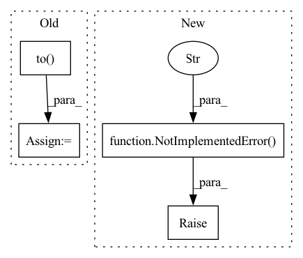

Pattern ID :26289

Before Change
self.selected_features = config["selected_features"]
self.dataset = dataset
self.device = config["device"]
self.item_feat = dataset.get_item_feature().to(self.device)
// need change the "load_col" config
print(self.item_feat.interaction.keys()) // ["item_id" "class"]
self.hidden_size = config["hidden_size"]
After Change
elif self.loss_type == "CE":
self.loss_fct = nn.CrossEntropyLoss()
else:
raise NotImplementedError("Make sure "loss_type" in ["BPR", "CE"]!")
self.initializer_range = config["initializer_range"]
self.apply(self.init_weights)
In pattern: SUPERPATTERN
Frequency: 3
Non-data size: 4
Instances
Fragment ID: 79042006
Project Name: rucaibox/recbole
Commit Name: 50813513da4c5d1c81678862ec4a5f3b64ddf571
Time: 2020-10-14
Author: hui.wang@ruc.edu.cn
File Name: recbox/model/sequential_recommender/sasrecf.py
M Class Name: SASRecF
N Class Name: SASRecF
M Method Name: __init__(3)
N Method Name: __init__(3)
M Parent Class: SequentialRecommender
N Parent Class: SequentialRecommender
M File Name: recbox/model/sequential_recommender/sasrecf.py
N File Name: recbox/model/sequential_recommender/sasrecf.py
M Start Line: 43
M End Line: 70
N Start Line: 50
N End Line: 70
'>
Before Change
// XXX: Breaking the self.model convention but I see no way around it for now.
if ShardedDDPOption.AUTO_WRAP in self.args.sharded_ddp:
model = auto_wrap(model)
self.model = model = FullyShardedDDP(
model,
mixed_precision=mixed_precision,
reshard_after_forward=zero_3,
cpu_offload=cpu_offload,
).to(self.args.device)
elif is_sagemaker_dp_enabled():
model = DDP(model, device_ids=[dist.get_local_rank()], broadcast_buffers=False)
elif self.args.local_rank != -1:
After Change
def _wrap_model(self, model, training=True):
if is_sagemaker_mp_enabled():
raise NotImplementedError(
"Sagemaker"s distrubuted data parallel features are not supported by `ORTTrainer` yet. Stay tuned!"
)
// already initialized its own DDP and AMP
if self.deepspeed:
return self.deepspeed
'>
Fragment ID: 79042003
Project Name: huggingface/optimum
Commit Name: 1c4b5b1caf1f1a58c32898ffb208538d7364b73a
Time: 2022-04-29
Author: 44135271+JingyaHuang@users.noreply.github.com
File Name: optimum/onnxruntime/trainer.py
M Class Name: ORTTrainer
N Class Name: ORTTrainer
M Method Name: _wrap_model(3)
N Method Name: _wrap_model(3)
M Parent Class: Trainer
N Parent Class: Trainer
M File Name: optimum/onnxruntime/trainer.py
N File Name: optimum/onnxruntime/trainer.py
M Start Line: 1268
M End Line: 1315
N Start Line: 1233
N End Line: 1267
'>
Before Change
// If sigma provided use the same for all batch items (used for sampling)
if exists(sigma):
sigmas = torch.full(size=(batch,), fill_value=sigma).to(device)
assert exists(sigmas)
// Predict network output and add skip connection
c_skip, c_out, c_in, c_noise = self.get_scale_weights(sigmas)
x_pred = self.net(c_in * x_noisy, c_noise, **kwargs)
x_denoised = c_skip * x_noisy + c_out * x_pred
After Change
sigma: Optional[float] = None,
**kwargs,
) -> Tensor:
raise NotImplementedError("Diffusion class missing denoise_fn")
def forward(self, x: Tensor, noise: Tensor = None, **kwargs) -> Tensor:
raise NotImplementedError("Diffusion class missing forward function")
'>
Fragment ID: 79042000
Project Name: archinetai/audio-diffusion-pytorch
Commit Name: 68da808cd7e5acb5c571cf14ccefecb3ddceec5b
Time: 2022-10-08
Author: flavio.schneider.97@gmail.com
File Name: audio_diffusion_pytorch/diffusion.py
M Class Name: Diffusion
N Class Name: Diffusion
M Method Name: denoise_fn(4)
N Method Name: denoise_fn(4)
M Parent Class: nn.Module
N Parent Class: nn.Module
M File Name: audio_diffusion_pytorch/diffusion.py
N File Name: audio_diffusion_pytorch/diffusion.py
M Start Line: 276
M End Line: 305
N Start Line: 106
N End Line: 106